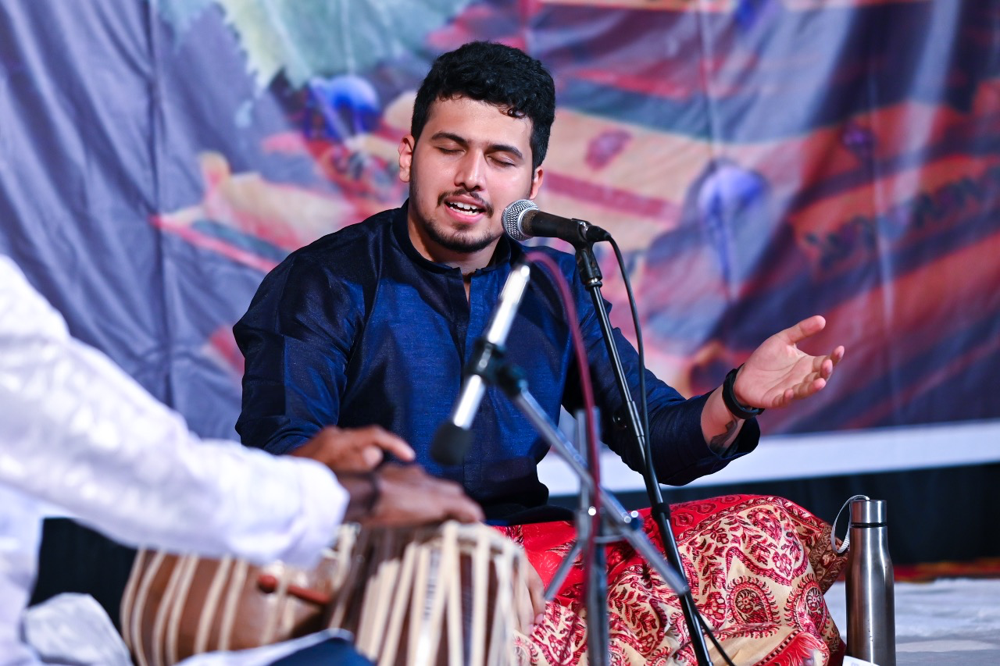

Hindustani Classical Vocalist
Step into the world of B G Sumithkumar — where every note reflects years of dedication and every performance carries the essence of his evolving musical journey.
B G Sumithkumar is a promising Hindustani classical vocalist, recognized as one of the finest young talents in Indian classical music. Known for his soulful renditions, impeccable taans, and deep understanding of ragas, Sumithkumar has enthralled audiences through his captivating performances in various prestigious festivals and concerts across Karnataka. Alongside his passion for music, Sumithkumar holds a Bachelor's degree in Information Science & Engineering and works as a Data Engineer, balancing his professional career with his deep-rooted commitment to Indian classical music.
Born into a family deeply connected with literature and music, Sumithkumar was introduced to Hindustani classical music at the age of 4 by his mother, Mrs. Sudha Ganesh, a teacher and writer. His formal training began in 2005 under Vid. Shivananda Bhat, laying the foundation for his expertise in the traditional art form. To further refine his craft, he received advanced training from Vid. Shreepad Hegde Somanamane. He was later accepted as a disciple by Pandit Parameshwar Hegde, an eminent Hindustani classical vocalist and a foremost disciple of the Late Padmabhushan Pandit Basavaraj Rajguru. A distinguished exponent of the Kirana, Gwalior, and Patiala Gharanas, Pt. Hegde is widely revered for his profound knowledge of Khayal gayaki, exceptional command over taans, laya and swara and his ability to bring out the deepest emotional essence of a raga. Under his meticulous guidance, Sumithkumar has honed his technical precision, artistic expression and musical depth in Khayal, gradually carving out a distinctive style of his own. In addition to his deep commitment to classical music, Sumithkumar is exploring avenues in semi-classical & devotional music. With a passion for mentoring young musicians, he is dedicated to passing on the rich tradition of Hindustani classical music through online classes, and live performances.
Phone: +91 8105483590
Email: sumithbg26@gmail.com
YouTube: @bgsumithkumar
Instagram: @bg_sumithkumar